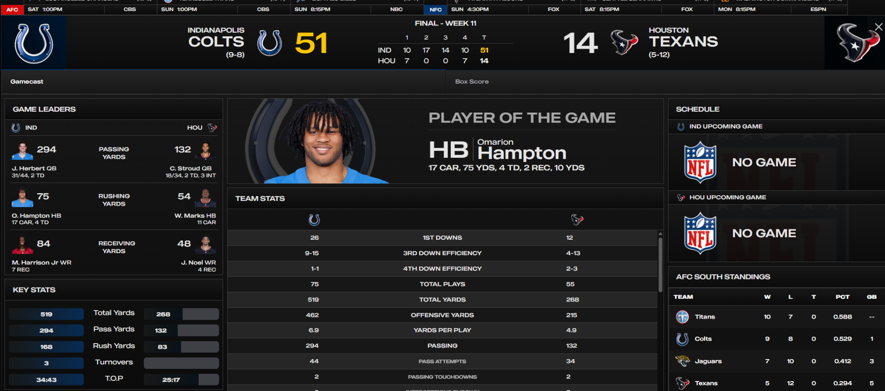

OKLAHOMA CITY BISONS
OKLAHOMA CITY BISONSWeek 11 · Final
Colts at Texans
W 51–14
Indianapolis record after the game: 4–7
Madden Gamecast
Select the screenshot to view it full size.

Week 11 · Final
W 51–14
Indianapolis record after the game: 4–7
Select the screenshot to view it full size.
